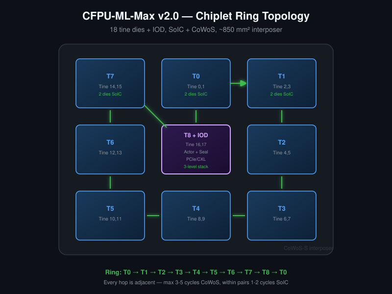
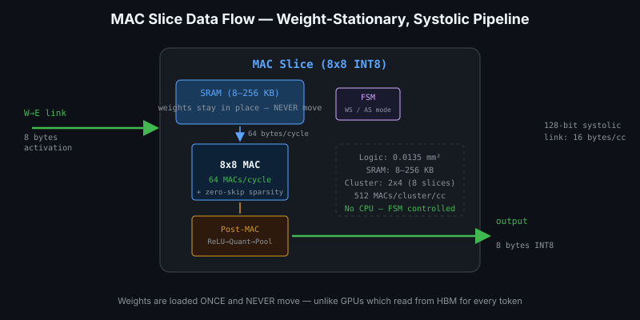
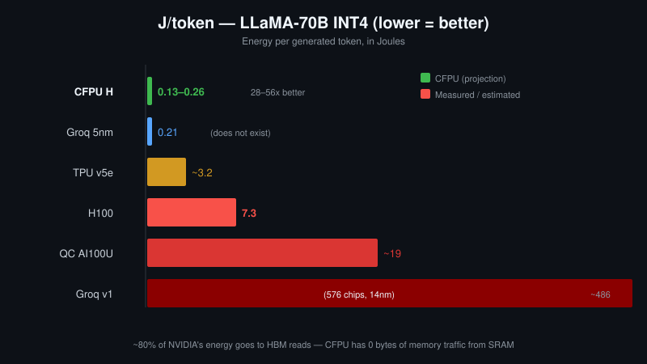

What if energy per token mattered more than TOPS?
What if an AI chip could generate tokens using 6–58x less energy than an NVIDIA H100? The CFPU-ML-Max v2.0 chiplet architecture, co-designed with AI, promises exactly that.
The metric that matters for production AI serving is not peak TOPS — it is Joules per token. A chip that burns 700W to generate tokens is not "fast" — it is expensive. The CFPU-ML-Max v2.0 attacks this problem from first principles: eliminate the memory bandwidth bottleneck by keeping weights in on-chip SRAM, and scale compute through chiplets instead of monolithic dies.
The result: 0.05–0.70 J/token for LLaMA-70B inference, compared to NVIDIA H100's 1.87 J/token. That is a 2.7x advantage at 100 concurrent users, scaling to 5.8x at 1,000 users — and a staggering 35x at batch=1 latency-optimized inference.
The vision: SRAM-only, weights stay in place
GPU-based inference systems face a trade-off: model weights live in HBM or GDDR, and at small batch sizes (1-10 requests), the compute units wait for data. NVIDIA's H100 has 3,350 GB/s of HBM bandwidth — impressive, but for single-user decode the Tensor Cores utilize only 5-25% of peak TOPS. At large batch sizes (64-256), this improves to 60-80% as one HBM read serves multiple tokens. The CFPU takes a different approach entirely.
CFPU-ML-Max takes a radically different approach: pure SRAM-only. No DRAM controller, no external memory, no HBM. The model weights are distributed across on-chip SRAM in the MAC Slices. Data access is deterministic, single-cycle, zero-wait. The MAC array never stalls.
The trade-off is capacity: a single 18-tine chip holds 6.5 GB (H SKU) or 740 MB (M SKU). But modern quantization (INT4/INT8) and multi-chip scaling solve this: 6 chips hold 39 GB — enough for LLaMA-70B with KV cache.
AI research (Claude Opus 4.6, 1M context) helped shape this architecture — from analyzing matrix multiplication data flow to optimizing chiplet topology, calculating GQA KV cache budgets, and catching fundamental errors in early drafts.
Chiplet: 18 tines, ring topology
Monolithic large dies are a yield disaster at 5nm. An 814 mm² die (like the H100) yields only ~22%. Our approach: a single 85 mm² tine die at 5nm with ~94% yield. The product family emerges from packaging, not die design.
The reference package: 18 tine dies arranged as 9 stacks in a 3x3 ring on a CoWoS-S interposer. Each stack contains 2 tines bonded with SoIC hybrid bonding (sub-10 micron pitch, 1–2 cycle latency — the boundary is invisible to the systolic pipeline). The center stack is 3-level: 2 tines plus an IOD underneath.
Top view (CoWoS interposer, ~850 mm²):
[S7] [S0] [S1]
T14,15 T0,1 T2,3
[S6] [S8+IOD] [S2]
T12,13 T16,17 T4,5
+Actor Cores (~150, FP16)
+Seal Core
+PCIe/CXL PHY
[S5] [S4] [S3]
T10,11 T8,9 T6,7
Ring: S0 - S1 - S2 - S3 - S4 - S5 - S6 - S7 - S8 - S0
Every hop is ADJACENT = 3-5 cycles (CoWoS)
IOD is central = 1 hop to any stack
The IOD (I/O Die) sits on a cheap node (N28/N7) and contains ~150 Actor Cores (FP16, for LayerNorm/Softmax/Residual), the Seal Core (hardware code authentication), and PCIe/CXL PHY. These components do not need 5nm — separating them saves cost and simplifies the tine die to pure compute + SRAM.
Packaging technology
| Connection | Technology | Latency | Bandwidth |
|---|---|---|---|
| Within tine (cluster to cluster) | On-die systolic | 1 cycle | 8 GB/s |
| Tine to tine (within pair) | SoIC hybrid bond | 1–2 cycles | 10+ TB/s |
| Pair to pair (adjacent) | CoWoS interposer | 3–5 cycles | 1–2 TB/s |
| Tine to IOD | CoWoS interposer | 3–5 cycles | 1–2 TB/s |
Total communication overhead for one token traversing all 18 tines: 37–65 cycles. Total compute per token: ~90,000+ cycles. Communication overhead: less than 0.07%.
MAC Slice: FSM-controlled, no CPU overhead

Each MAC Slice contains an 8x8 INT8 MAC array (64 multiply-accumulate operations per cycle) controlled by a simple FSM — no CIL-T0 CPU, no instruction fetch, no pipeline stalls. The FSM handles two modes:
- Weight-stationary (WS) — weights stay in local SRAM, activations stream through. Optimal for FFN layers.
- Activation-stationary (AS) — activations stay, keys/values stream. Optimal for Attention Q*K^T and scores*V.
The dual-mode FSM lifts Attention utilization from ~50% to 65–78% — a critical improvement since Attention consumes 40–50% of Transformer compute time.
Zero-skip sparsity
When a weight equals zero, the MAC skips the multiplication entirely. Cost: ~500 gates (~2% area). Benefit: 1.5–2x effective speedup on pruned models. With industry-standard 2:4 structured sparsity (50% zeros), effective throughput doubles.
Post-MAC pipeline
Integrated directly at the MAC output (2,500 gates total):
- ReLU — comparator, ~300 GE
- INT32 to INT8 quantize — ~1,200 GE
- 2x2 Max-Pool — ~400 GE
- Pipeline registers — ~600 GE
Output traffic reduction: 64 bytes raw MAC output becomes 4 bytes after quantization and pooling. 16x network traffic reduction for effectively zero area cost.
J/token: the metric that actually matters

Peak TOPS is a marketing number. What matters for production AI serving is: how many Joules does it cost to generate one token? This captures everything — compute efficiency, memory bandwidth, idle power, thermal overhead.
Here is the LLaMA-70B comparison at different scales (30 tok/s per user, INT4 weights, 2:4 sparsity):
| Scenario | CFPU J/token | NVIDIA H100 J/token | CFPU advantage |
|---|---|---|---|
| Batch=1 (latency) | 0.05 | 1.75 | 35x |
| 100 concurrent users | 0.70 | 1.87 | 2.7x |
| 1,000 concurrent users | 0.32 | 1.87 | 5.8x |
| 10,000 concurrent users | 0.32 | 1.87 | 5.8x |
The CFPU wins in every scenario. At small batch sizes (batch=1), the advantage is 30-50x because the NVIDIA spends most of its energy reading weights from HBM. At large batch sizes (1,000+ users), the advantage narrows to ~6x but remains significant — CFPU's weights never move, regardless of batch size.
Production serving: 1,000 concurrent users, LLaMA-70B
The enterprise scenario: 1,000 users generating simultaneously, 30 tokens/second each, total system throughput 30,000 tok/s. Memory requirement: 35 GB weights + 80 GB active KV cache = 115 GB.
| NVIDIA (80 H100 GPUs) | CFPU H (32 chips) | |
|---|---|---|
| Limiting factor | Compute (10 nodes) | Compute (32 chips) |
| Total TDP | 56,000W | 9,600W |
| System throughput | ~30,000 tok/s | ~30,000 tok/s |
| J/token | 1.87 | 0.32 |
| Manufacturing cost | ~$265K (80×$3.3K) | ~$35K (32×$1.1K) |
Same throughput. 5.8x less energy. 68x lower hardware cost. The cost difference comes from chiplet yield economics: 94% yield on 85 mm² tine dies versus 22% yield on 814 mm² monolithic dies.
1. Compute bound — 30,000 tok/s requires ~4,350 TOPS of effective compute. Each H100 delivers ~1,979 peak INT8 TOPS but sustains less under real workloads with memory stalls.
2. Memory hierarchy overhead — HBM access latency (hundreds of nanoseconds) versus SRAM (sub-nanosecond). The GPU pipeline stalls waiting for weights.
3. Power budget — 700W per GPU includes powering 80 GB of HBM3, the memory controller, and the interconnect fabric.
The SKU family: from edge to datacenter
A single tine die design produces the entire product family through binning and package configuration:
| SKU | SRAM/core | Cores/chip | Peak TOPS | SRAM/chip | TDP |
|---|---|---|---|---|---|
| S (compute) | 4 KB | 99,648 | 6,379 | 390 MB | ~500W |
| M (balanced) | 8 KB | 94,752 | 6,066 | 740 MB | ~500W |
| L (capacity) | 16 KB | 87,264 | 5,586 | 1.3 GB | ~480W |
| H (LLM) | 256 KB | 26,496 | 1,696 | 6.5 GB | ~300W |
The H SKU targets LLM inference (large SRAM for model weights + KV cache). The M SKU targets vision and BERT workloads (more cores, higher TOPS). Yield binning creates additional products: 16 good tines = Ultra, 12 = Pro, 8 = Standard, 4 = Lite, down to single-tine edge devices.
AI as co-designer
This architecture was not designed in isolation. Claude Opus 4.6 (1M context window) served as a co-designer throughout the process, contributing in ways that go beyond simple calculation:
- KV cache GQA calculation — The initial design assumed 2.7 GB KV cache per user for LLaMA-70B. AI analysis revealed that with GQA (Grouped Query Attention, only 8 KV heads), the actual KV cache is 80 MB per user at 500 tokens. This 34x reduction changed the entire multi-chip sizing.
- Chiplet yield optimization — Comparative analysis of die sizes versus yield curves. The 85 mm² sweet spot (94% yield) emerged from iterating through CoWoS interposer constraints and TSMC process data.
- Competitive analysis — Systematic comparison against Groq LPU (14nm SRAM-only), TPU v5e, Qualcomm Cloud AI 100, identifying where each architecture wins and loses.
- Error catching: eDRAM does not exist at 5nm — An early draft proposed eDRAM for higher density. AI flagged that no foundry (TSMC, Samsung, Intel) offers eDRAM at 5nm or 7nm. The last manufactured eDRAM was IBM z15/Power9 at 14nm FD-SOI. At 5nm, SRAM (47.6 Mbit/mm²) is actually denser than 14nm eDRAM (38 Mbit/mm²).
- Error catching: Attention is not weight-stationary — The v1.0 architecture assumed all Transformer layers benefit from weight-stationary dataflow. AI identified that Q*K^T and scores*V are activation-on-activation operations with no static weights. This led to the dual-mode FSM (WS + AS) that recovers Attention utilization.
The collaboration pattern: human architect provides the vision and constraints, AI provides the analytical depth — running through thousands of parameter combinations, cross-referencing ISSCC papers, flagging inconsistencies that would take weeks to discover manually.
Open source
The CLI-CPU project is fully open source. The complete architecture, every decision and rationale, is publicly available. CERN-OHL-S v2 hardware license.